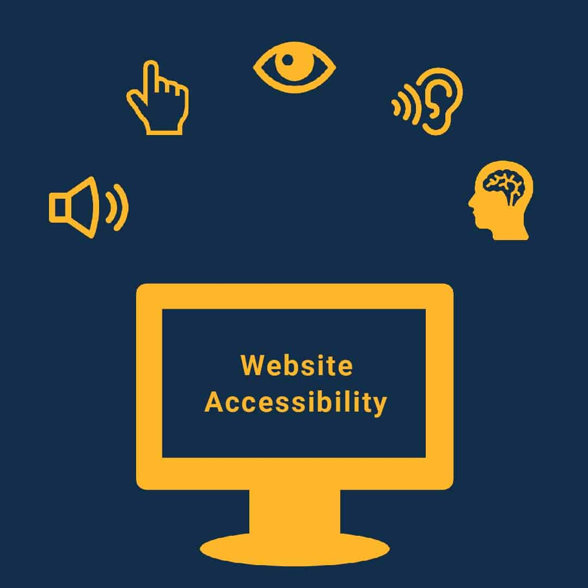

An Educational Website on Universal Design
Why Universal Design?
Incorperating elements of Universal design into your websites will allow for more access from a wider range of users. Now imagine if every designer took the principles of universal design into consideration when building their website. How many more people could access the internet? These new internet users could roam freely on the web, purchasing things & contributing as they please.
Universal Design is better design
A good design should serve it's users. A good design should be intuitive and make it's affordance clear. A good design should be accesible. A good design should not allienate anyone. As the internet constantly evolves why not do what we can to ensure the fundations of good designs accessible for all.
Universal Design makes more money
More users means MORE MONEY, and who doesn't want more money. Whether it's Google Adsense or more potential customers for your product and or service, why not design your website for as many eyes as possible?
Universal Design means more contribution
In the same way that more users means more profit, more users means fresh sets of eyes and capible brains analyzing the problems us web designers face day in and day out. If we can make the internet as a community accesible for all, the more contribution will be encouraged furthering technology and pushing the limits of what is possible
It is the right thing to do
Accesible tech can be life changing for those struggling with impairments and disibilites. Haben Girma, the first blind/deaf student to graduate from Havard Law school, explains that accesibility can be as simple as removing barriers, allowing for those who were previously unable to try and overcome challenges.